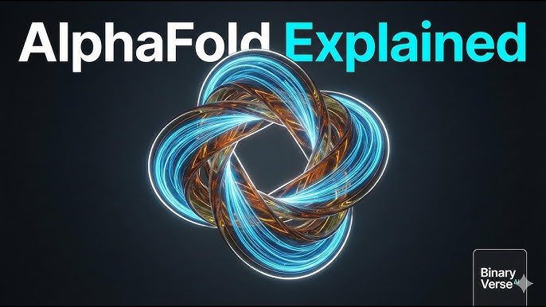
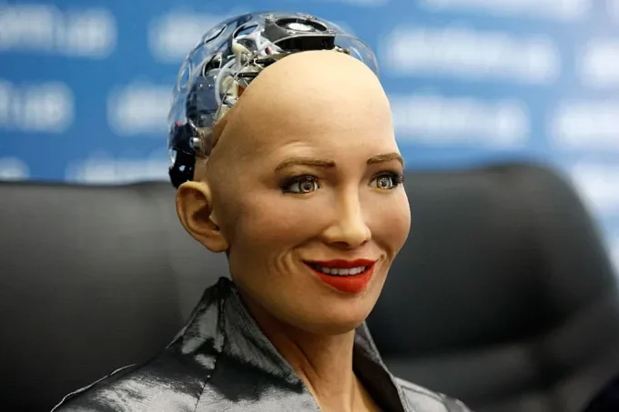

1. ChatGPT
Desenvolvido pela OpenAI, o ChatGPT é um modelo de linguagem avançado capaz de conversar, responder perguntas, gerar textos e até auxiliar em programação. É amplamente usado em atendimento ao cliente, educação e suporte técnico.
Desenvolvido pela OpenAI, o ChatGPT é um modelo de linguagem avançado capaz de conversar, responder perguntas, gerar textos e até auxiliar em programação. É amplamente usado em atendimento ao cliente, educação e suporte técnico.
O Google Bard é uma IA de linguagem baseada em modelos avançados do Google. Ele consegue gerar respostas em linguagem natural, resumir textos e auxiliar em pesquisas e tarefas acadêmicas.
DALL·E é uma IA que gera imagens a partir de descrições em texto. Desenvolvida pela OpenAI, é usada para criar ilustrações, design e conceitos visuais de forma automatizada.
MidJourney é uma IA especializada em gerar imagens artísticas a partir de textos. É muito popular entre artistas digitais e criadores de conteúdo para gerar conceitos visuais rapidamente.
Desenvolvido pela DeepMind, o AlphaFold é uma IA que prevê estruturas de proteínas com alta precisão. Essa tecnologia revolucionou a biologia molecular e a pesquisa médica.

Sophia é um robô humanoide desenvolvido pela Hanson Robotics, com IA capaz de interagir, reconhecer expressões faciais e participar de entrevistas. É um exemplo de IA aplicada à robótica social.

O Autopilot da Tesla é um sistema de condução semi-autônoma que usa IA para interpretar dados de sensores e câmeras, ajudando na direção, frenagem e navegação de veículos elétricos.